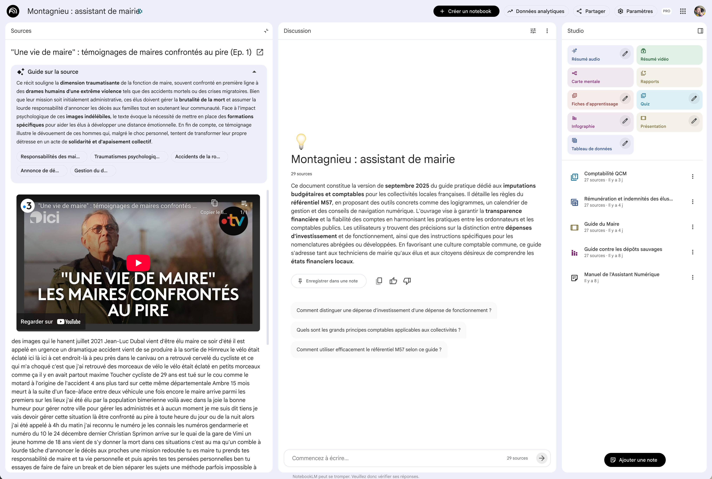

NotebookLM — Contenu d'une source
Quand vous cliquez sur une source dans le panneau de gauche, NotebookLM affiche son contenu tel qu'il a été lu et compris par l'IA. Pour les documents texte, vous retrouvez le contenu intégral. Pour les vidéos YouTube, NotebookLM récupère les sous-titres existants. Pour les fichiers audio (MP3, WAV...), il réalise sa propre transcription. Dans tous les cas, le contenu est exploitable comme n'importe quel document texte.
Cliquez sur les pastilles orange pour découvrir chaque fonctionnalité

Cliquez sur une pastille pour en savoir plus